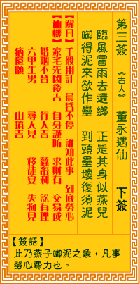

观音灵签第三签 【董永遇仙】 |
 | |||
冲风冒雨去还归 役役劳身似燕儿 衔得泥来成垒後 到头垒坏复成泥 |
||||
| 【吉凶】 | 下下签 | 【宫位】 | 子宫 | |
| 【签语】 | 此卦燕子衔坭之象 凡事劳心费力也 | |||
| 【解曰】 | 千般用计 晨昏不停，谁知此事 到底劳心 | |||
| 【仙机】 | 此签家宅先凶后吉，自身谨防，求财有，交易成，婚姻不合，行人吉，六甲生男，蚕畜利，讼有理，寻人见，移徙安，失物见，病还头，山坟吉。 | |||
| 【详解】 | 顶着风冒着雨来来回回，就像燕子般辛勤奔波不歇;忙碌费力含来的小泥团，好不容易堆砌成土块，有个样子了，哪里知道最后却又崩坏，土块再度变 回泥团。) 千般用计，晨昏不停，谁知此事，到底无成。此签燕子衔泥之象，凡事空心劳力。 冲风冒雨去还归。役役劳心似燕儿。君尔之运逢燕子衔泥筑巢之象耶。空心徒劳。无益者。为先难后甘之运。唯应小心。本签之总结也。千方百计。晨 昏碌碌不停。谁知此事到底无以可成者。修之。悟之。 此签有”束手无策”之意。奉劝当事人，勿举棋不定。有些人个性刚直、做事一板一眼，临事却不知变通，往往因而错失良机。须知凡事各有利弊，有舍才 有得。事有轻重缓急，与其一昧墨守成规，不如跳脱思维、因地制宜，视情况环境调整自己的原则与做事方法。或集思广益、共同研拟商议，找出解决之道。切忌 犹豫不决又固执己见，流于空想而怯做，终将空心劳力，徒然庸人自扰罢了。 | |||
| 【典故】 | 神话故事。传说汉朝时董永因无钱葬父，卖身为奴，替人做长工。他的孝心感动了天上的仙女，私自下凡来和他结为夫妻，白天劳作，夜间织布，使他得以还债赎身，恢复自由，一年后，仙女辞别回天。《织锦记》《天仙配》故事 | |||